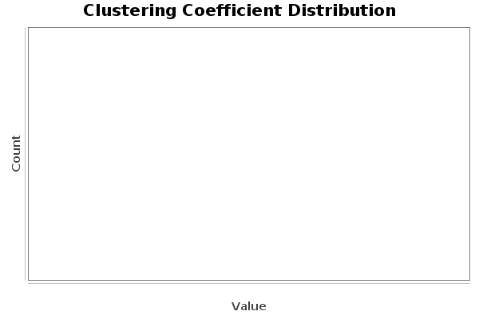

Clustering Coefficient Metric Report
Parameters:
Network Interpretation: directed
Results:
Average Clustering Coefficient: 0.249
The Average Clustering Coefficient is the mean value of individual coefficients.

Algorithm:
Simple and slow brute force.